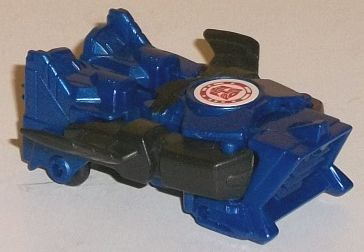
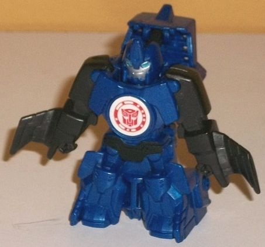
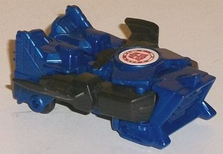
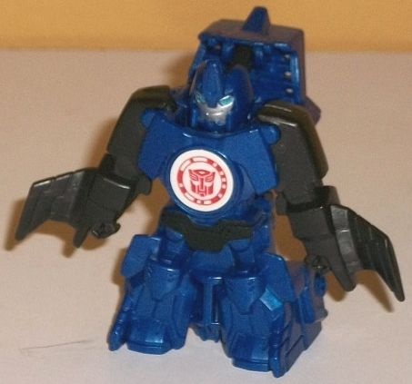
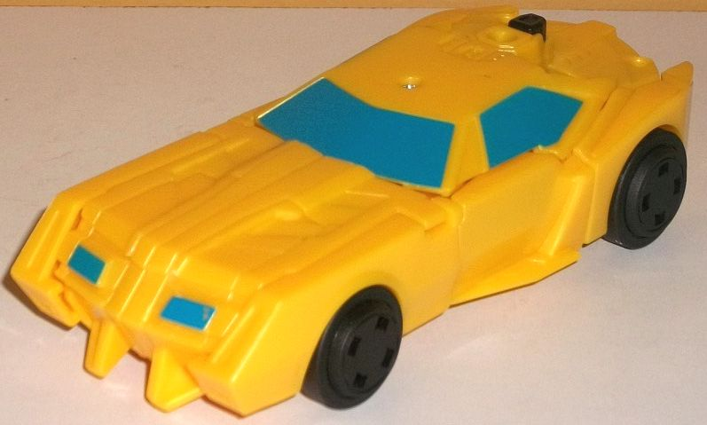
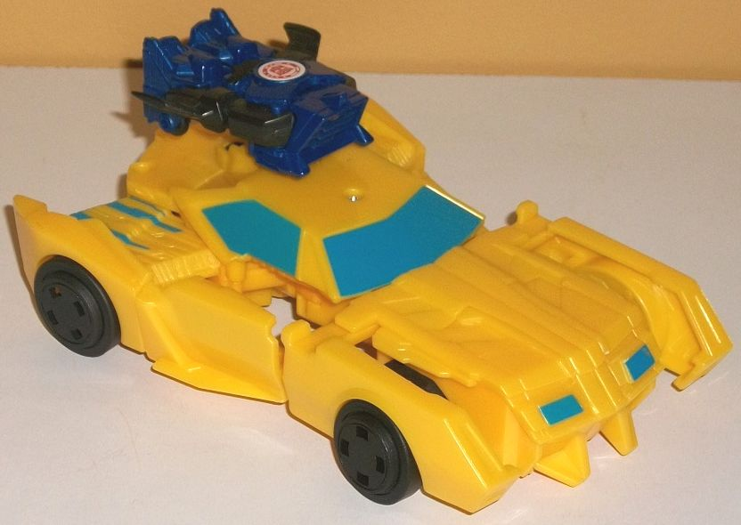
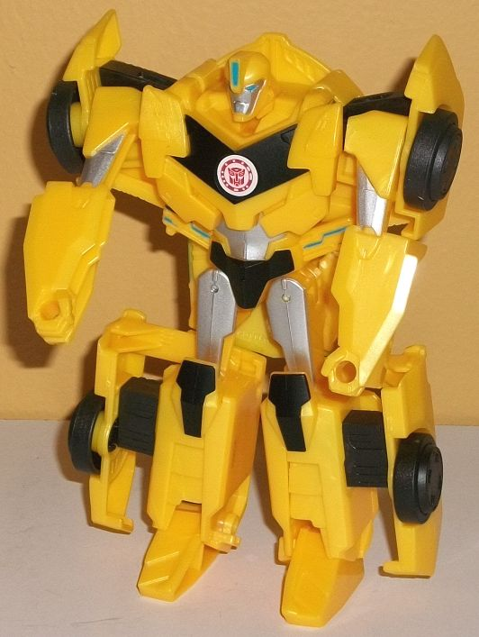

 
Size : Mini-Con
Difficulty of Transformation : Very Easy
Color Scheme : Dark milky blue, black, and some silver and moderately light blue
Individual Rating : 5.7
Allegiances
: Autobot
 Stuntwing
Stuntwing


Size
: Mini-Con
Difficulty of Transformation
: Very
Easy
Color Scheme
: Dark milky blue, black,
and some silver and moderately light blue
Individual Rating
: 5.7
Stuntwing's alternate
mode looks like a flying jet intake. It's kinda weird to look at. The front
has a fairly wide, angular shape with several ridges down it, like either
a giant grill or jet intake. There's small wings on the sides-- almost
laughably small, but at a Mini-Con size, I'm not too persnickety about
proportions-- with a slight bump near the back end for "tailfins", if you
will, and a circular exhaust port sticking out the back end. Even though
it's weird and fictional, it DOES look fairly solid for a vehicle mode--
well, except for the top. It's quite obvious when looking at the mold detailing
at the top that Stuntwing's waist and lower robot legs are right there
on the back end, with the arms somewhat obviously contracted a bit on the
sides (though it wouldn't be nearly as obvious if they weren't a different
color). Even though Stuntwing is a flying contraption, he does have little
wheels to roll along on in this mode. There's also a flip-out handle on
the bottom, to help plug Stuntwing into an Activator combiner to activate
their gimmick-- or if you just want a larger TF to hold Stuntwing for some
reason too, I guess. Most Mini-Cons have very simple color schemes, and
Stuntwing is no exception-- he's almost entirely a milky dark blue plastic
in this mode, with the only exceptions being that his arm/wing pieces,
a small paint app across his robot waist, and his wheels and peg on the
bottom are black. The milky dark blue plastic is a pretty nice shade, but
this scheme needed a lighter color to contrast against in this mode.
To transform Stuntwing,
just take the front section of his vehicle mode and rotate it down-- the
rest of his robot mode moves into place automatically. The end result isn't
much of a surprise if you looked at the vehicle mode from the top, with
the main difference being that the arms and legs are splayed out, the front
section is now on the upper back revealing a head, and of course he's standing
on the back end of the vehicle mode. He's got the usual RID2015 Mini-Con
details molded into his arms and legs, with little clenched fists, divots
on his knees and feet, and proportions that are slightly "superdeformed"
overall. He's also got a couple basic panels on his chest, but nothing
fancy. His headsculpt has a long vent on the center of an otherwise round
forehead, not unlike his partner Bumblebee (though Stuntwing's is more
exaggerated). Stuntwing has a smirky, silver face, with some moderately
light blue eyes-- it's a nice headsculpt, though unfortunately his face
is the only place you'll find lighter colors to contrast against the dark
blue and black on the rest of his body. His wings hang off his lower arms,
but they're so small as to not be an issue. The front hanging off his upper
back is a bigger eyesore, but it's still not that bad. There's also no
actual gap in between his legs, just the retracted exhaust port, but again,
at this small of a size it's not a big deal, details are bound to be molded
into other pieces. I do wish Stuntwing had articulation in this mode, though--
like many RID2015 Mini-Cons, though, he unfortunately does not.
 Bumblebee
Bumblebee



Difficulty of Transformation
: Very
Easy
Color Scheme
: Milky moderately dull
yellow, black, and some silver and moderately light sky blue
Individual Rating
: 6.5
Yep, this is Bumblebee
alright. At this point you're probably pretty familiar with his RID2015
design, and at least in vehicle mode, there isn't much to surprise you
here. The side rear pointy-fins are a little smaller than usual, and he's
got a little piece that extends back behind his roof that contains both
a plug for a Mini-Con Activator or just a button if you don't want to bother/are
missing the Mini-Con. On the rims of the side doors, there's small wings
that stick out juuuust a titch that are used mostly for the Activator mode.
The tips of 'Bee's feet poke out rather obnoxiously below his front grill--
or rather, in PLACE of a good portion of his lower front grill. On the
back end, there isn't any real rear end but rather just the top of Bumblebee's
robot mode with his head obviously folded down against the toy. (Hey, at
least they bothered to do so.) Mold-detailing wise he's got the basics,
like the trio of divots on his front hood and smaller ones on his back
end, as well as his angular grill and windows. However, he's desperately
needing some paint-- only his headlights and front and side windows are
painted a fairly light sky blue. Beyond that, nearly the entire mode is
a milky, moderately dull yellow which looks okay, but a more "pure" color
would've looked better on a sportscar. His tires and the button that converts
him to Activator mode is black, but that's it as far as other colors go
in this mode. It's a shame too, as RID2015 'Bee really needs his stripes
to stand out.
Pressing in on his black
button/plugging in an Activator Mini-Con will automatically cause the sides
of Bumblebee's vehicle mode to pop out, which is essentially his Activator
mode. Here he's supposed to be able to fly, though darned if I'd be able
to know if I hadn't seen the show. It really just...well... looks like
a car with the sides popped out. There's no visible thrusters or wings
remotely large enough to look like they're flight-worthy. There are some
cool circuitry and mechanical details revealed near the rear, along with
some blue "power" lines there and on the backside of his quite obvious
lower arms popping out below the windows. The front AND back wheels also
pop out further too, which is admittedly a little cool, but again, not
sure what this has to do with flight. This is a pretty weak Activator mode,
for sure.
Transforming 'Bee to
his robot mode is incredibly easy-- from his Activator mode, just fold
up the head from the back, fold out the toes from the bottom of the grill,
and stand him up. You're done. Because Bumblebee's robot mode has the bits
from his Activator mode popped out-- and that he's basically molded onto
the underside of his vehicle mode-- it means his kibble in this mode can
get a bit obnoxious. The worst are those elongated front tires and their
attached sections on the sides of his lower legs. His shoulders are also
a bit wider than on most of his toys because of the popped-out bits there,
but that's not that big of an issue; no, the issue is that he's got the
entire hood of his car mode right behind his waist and upper legs, an area
that SHOULD be pretty slim. There's a couple of nifty blue circuitry details
below his chest, but that's still extra kibble, there. The doors are also
on the sides of his lower arms, though this isn't obvious if you don't
move his arms forward. (Unfortunately, that's about all the articulation
this mode has-- he can move forward at the shoulders, his legs can move
side-to-side slightly, and his ankles can rotate back-and-forth slightly.
That's it. C'mon, Hasbro-- not even forward hip movement?) Bumblebee does
have his basic robot mode details molded in, like the "vents" on his lower
legs, his faux "compressed car window & grill" chest, and his headsculpt
is pretty spot-on show-accurate. (However, he does have a glum look on
his face... does he feel the same way as I do about this toy in general?)
The colors are still, of course, predominantly yellow, but there's a bit
more of a color breakup in this mode. He's got silver on his upper arms,
upper legs, abs, and face; black paint on his knees, waist, and faux window-chest;
and a bit of light blue on his eyes, forehead vent, and circuitry lines
below his chest. Although it does the job, a bit more paint on his lower
arms and lower legs would've been appreciated.
Stuntwing is a decent
little Mini-Con with a unique alt-mode, but Activator Bumblebee is a disappointment.
I generally like the RID2015 Activator gimmicks-- but you gotta give me
something cool. Having the sides of Bumblebee's car mode pop out and calling
it a "flight mode" is a real stretch, especially without any real wings
and with the added issue of more kibble in robot mode. Add to this his
very limited articulation while not being an obviously simplified toy,
as well as a real lack of paint in vehicle mode, and this is easily my
least favorite of the RID2015 Activator packs.
Reviews by Beastbot